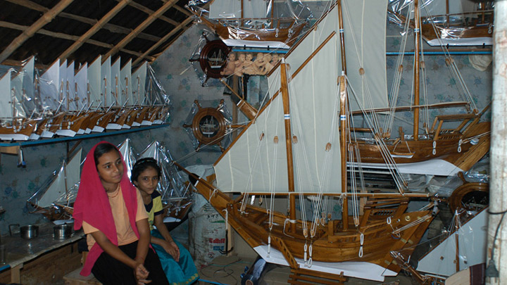

Kappad Beach has historically played an important role in the history of Kerala. On these shores, over 500 years ago in 1498, 170 men led by Vasco- da-Gama first stepped onto Kerala. The entire State, especially the Malabar Coast, would never be the same again. A visit to Kozhikode is incomplete without a visit to this legendary site. The spice route flourished through this Beach. A walk in and around the place gives one an idea of itshistorical relevance. The rocks and small hills add to its charm. The nearby shacks are always stocked with excellent local delicacies and tea. Migratory birds can be spotted occasionally as well. Kappad Beach is a truly majestic destination, which will always hold an important place in our history.
Beypore beach is located 15 km away from Kadavu, at the jaws of Chaliyar River. The charming beach is just like a treasure of peace and tranquility with its picturesque atmosphere, wide stretches of golden sands and fascinating coconut trees; swaying tenderly in the cool breeze. This beach is pristine and perfect for a quiet escapade. Take a short break from your busy life and embark on Beypore beach where you can pamper yourself eternally with Ayurvedic massages, indulge in various adventurous water sports activities, or simply strolling along the shoreline. So, relax and take part in all activities and enjoy holidaying in Beypore with full pleasure.